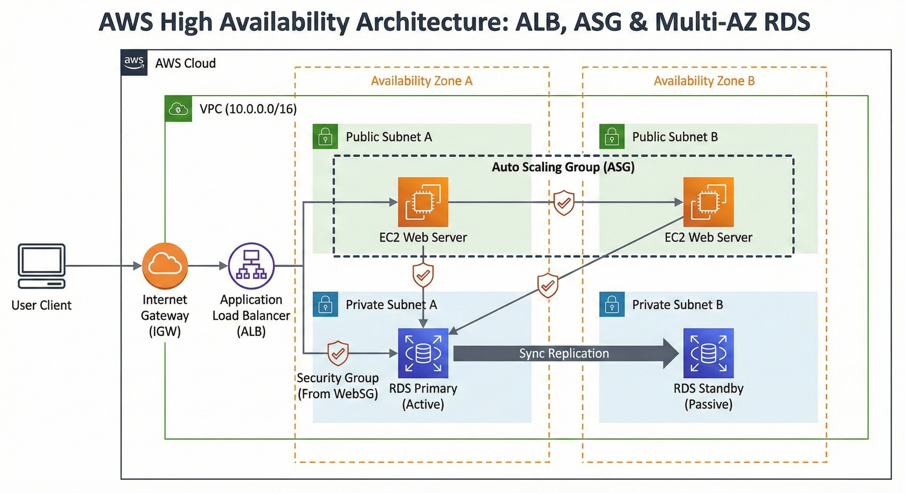

AWS Certified Solutions Architect – Associate | AI Practitioner
I am an AWS Certified Solutions Architect & AI Practitioner driven by the challenge of building cloud-native systems. My approach combines a strong academic foundation from the University of Macedonia (Applied Informatics) with hands-on experience in Infrastructure as Code (Terraform), Serverless architectures and scalable AI workflows. I focus on bridging the gap between automated technical infrastructure and real-world business value.

A production-ready environment automated with Terraform (IaC). It features a custom VPC, Application Load Balancer, Auto Scaling Group, and Multi-AZ RDS, designed for zero downtime and automated failover.
View Source Code ↗An event-driven serverless application that automatically processes receipt images. It leverages Amazon Textract (AI) to extract data and stores it in DynamoDB, triggering real-time notifications via SNS.
View Source Code ↗The source code for this very website! A modernized, cloud-native application. The frontend is delivered via S3 and CloudFront, while the backend is a containerized microservice running on Amazon EKS (Kubernetes), fully provisioned with Terraform and secured using IAM Roles for Service Accounts (IRSA).
View Source Code ↗